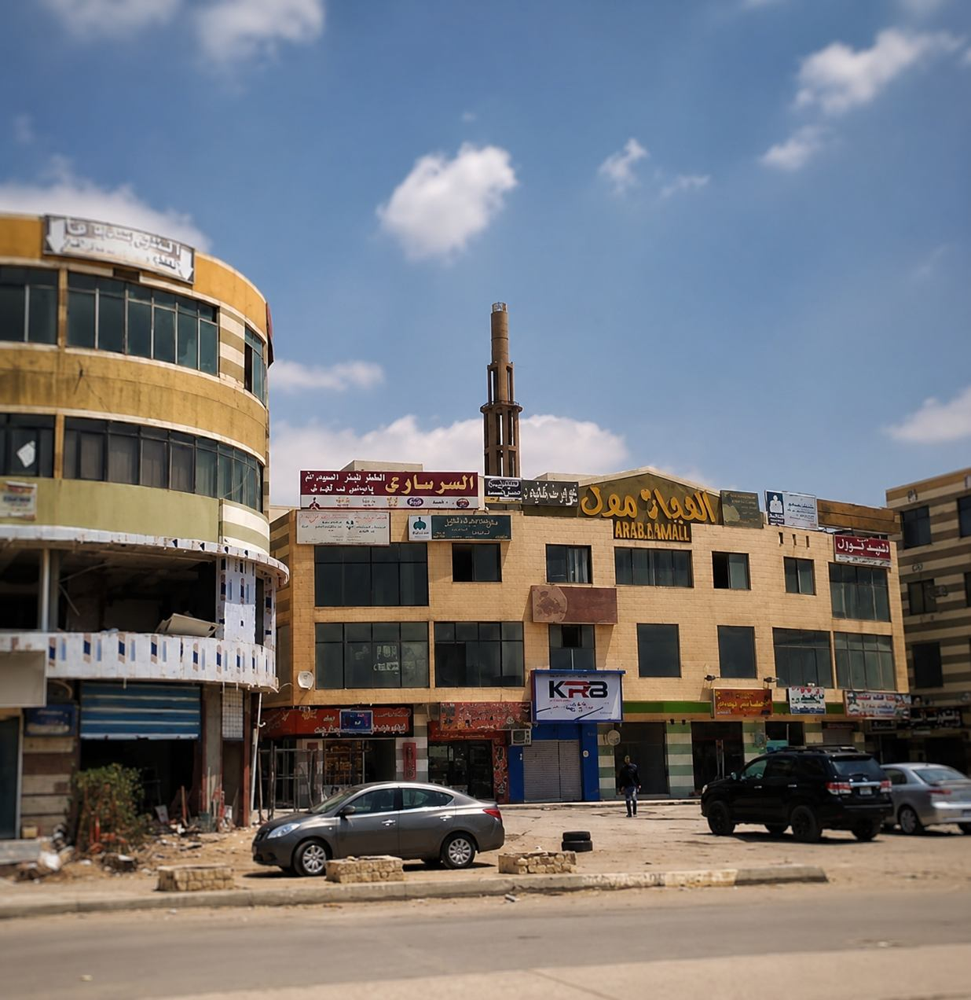

Criminal Cases & Cassation Appeals
Representation before 6th of October Court, Giza Appeal, Court of Cassation. Misdemeanors, felonies, appeals, strong defense.
DetailsAl Hejaz Mall Law Office – Comprehensive legal services for residents of 6th of October, Sheikh Zayed, Giza and Cairo
Al-Ghonemy Law Firm provides comprehensive legal services from its headquarters at Al Hejaz Mall near Al-Hosary Square in 6th of October City. We serve residents of 6th of October (all districts), Sheikh Zayed, Giza, Cairo, and remotely across Egypt.

We provide all legal services from our Al Hejaz Mall office, with representation before 6th of October Court, Prosecution, Family Court and Court of Cassation
Representation before 6th of October Court, Giza Appeal, Court of Cassation. Misdemeanors, felonies, appeals, strong defense.
DetailsDivorce, khula, alimony, custody, visitation, lineage before 6th of October Family Court.
DetailsHeir notification, sharia division, correction, disputes before Family Court.
DetailsContract notarization, 6th of October land registry, ownership disputes, validation, sale & lease contracts.
DetailsCompany formation (single person, LLC, joint-stock), commercial contracts, partnerships, disputes.
DetailsSale, lease, partnership, employment, supply, construction contracts, legal review.
DetailsElectronic blackmail, defamation, threats, hacking, data protection, Anti-Cybercrime Law.
Quick ConsultationUnfair dismissal, entitlements, accident compensation, work injuries, employment contracts.
Quick ConsultationRoad accident compensation, work injuries, material & moral damages, professional liability.
Quick ConsultationOur Al Hejaz Mall office serves all courts and prosecutions in 6th of October and neighboring areas
All civil, commercial and administrative lawsuits
Divorce, khula, alimony, custody, visitation, lineage
Criminal investigations, misdemeanors, felonies
Violations, simple misdemeanors, disputes
Personal status for Sheikh Zayed residents
Investigations for Sheikh Zayed residents
Appeals against 6th of October court judgments
Cassation appeals against Appeal judgments
Quick answers to most common inquiries about our Al Hejaz Mall office
Al-Ghonemy Law Firm office is located at Al Hejaz Mall near Al-Hosary Square in 6th of October City, Giza. Strategic location easily accessible from all 6th of October districts and nearby Sheikh Zayed.
Our lawyers appear before: 6th of October Primary Court, 6th of October Family Court, 6th of October General & Partial Prosecution, Sheikh Zayed Family Court, Sheikh Zayed Prosecution, Giza Court of Appeal, and Court of Cassation.
6th of October office at Al Hejaz Mall operates daily from 5:00 PM to 10:00 PM. We also provide 24/7 online consultations via WhatsApp, Zoom, and video calls.
Yes absolutely. 6th of October office is minutes away from Sheikh Zayed, serving New & Old Sheikh Zayed, District 1-4, Al Bashaer, Al Yasmine, Cairo Gate, Al Rabwa. We appear before Sheikh Zayed Family Court regularly.
Book easily: 1) WhatsApp 01126118276 (instant reply), 2) Call 01003651199 (daily 5-10 PM), 3) Fill online booking form, 4) Visit Al Hejaz Mall - Al-Hosary Square at the scheduled time.
Yes. Al-Ghonemy lawyers specialize in Cassation appeals and regularly represent clients before Court of Cassation. We prepare strong memoranda with 19+ years experience.
Yes. Our 6th of October office serves: All 6th of October districts, Sheikh Zayed, Giza (Dokki, Mohandessin, Agouza, Imbaba, Haram, Faisal), Cairo (Downtown, Heliopolis, Nasr City, Maadi, New Cairo) and all Egypt remotely.
Al-Ghonemy office at Al Hejaz Mall is ready to serve you. Specialized lawyers, 19+ years experience, representation before all courts.
01003651199 | 01126118276 | مول الحجاز - ميدان الحصري - 6 أكتوبر